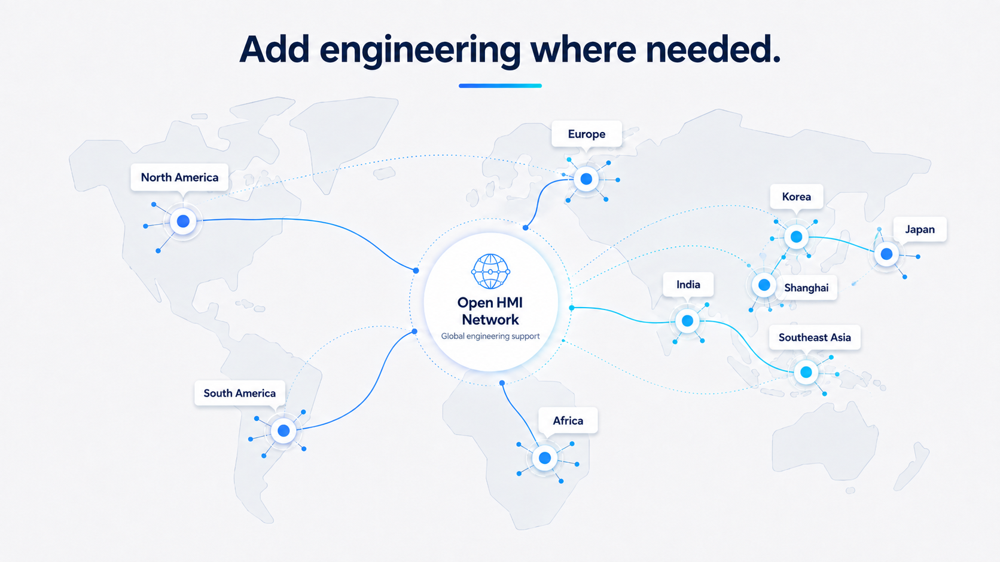

GUI
UI + Application
LVGL · Qt/QML · product UI.
Requirements are matched against GUI, firmware, Linux, BSP and integration capability rather than treated as a generic developer search.

LVGL · Qt/QML · product UI.
Linux · RTOS · drivers · interfaces.
Hardware · software · prototype · validation.
Share your requirements to discuss relevant capability and the next evaluation step. Availability, scope, commercial terms and the contracting party must be confirmed for each project.
Discuss Your HMI Project →Developer or engineering partner? Share your work with the network →